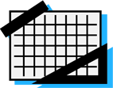

dia 18/08
das 10h às 18h
OpenSpaceRio
Inscreva-seAv. Pasteur 458 - Urca/RJ - UNIRIO - Prédio CCET - Sala 203
O evento
Para começar, o evento é auto organizado, ou seja, nenhuma grade de palestras ou atividades é imposta aos participantes. Os participantes são os responsáveis por definir o que vai rolar durante o evento. Para realizar um Open Space é necessário um grande quadro e pessoas! Essas pessoas escrevem no quadro sobre o que querem falar ou ouvir, e assim se criam os focos. Quando várias pessoas querem falar ou ouvir sobre algum tema, estas se separam e começam a conversar. O ideal é que esta rodada aconteça a cada duas horas, ou seja, depois de duas horas todos param o que estão fazendo e voltam para o quadro. Pode ser que as pessoas queriam falar sobre alguma linguagem de programação, algum modelo de negócios, sugerir implementar algo, realizar uma sessão de coding dojo, enfim, o que as pessoas quiserem!
Conteúdo
-
tecnologia
-

empreendedorismo
-

design
Quem deve ir ao evento?
O OpenSpace é um evento para pessoas que querem compartilhar sua paixão e empolgação sobre seus trabalhos, hobbies e interesses. É um evento para quem quer compartilhar, quem quer ouvir e aprender com outras pessoas. É um evento onde já estiveram presentes todos os tipos de pessoas criativas, incluindo...
- Programadores
- Empreendedores
- Designes
- Cientistas
- Fotógrafos
- Filósofos
- Artistas
- Escritores
- Jornalistas
- Ou o que for você...
O que levar?
Você não tem a obrigação de levar nada, só o seu conhecimento e vontade de compartilhar. Em todo caso, seguem algumas sugestões:
- Um laptop com sua apresentação (se quiser falar).
- Teremos projetores e telas. Pode levar um pendrive e pegar um laptop emprestado também!
- Um caderno e uma caneta para anotar o que quiser e pegar autógrafos.
- Alguma coisa para trocar com os novos amigos... cartão? Comida?
- Um amigo(a)... ou quantos quiser!
Quem pode falar?
Qualquer um pode falar! O espaço estará aberto para qualquer um que queira compartilhar o que está fazendo ou o que gosta.
O povo gosta de ver mão na massa, gosta de ver problemas resolvidos. Pode ser algo que você fez sozinho, com uma galera, um projeto pessoal, algo que você "hackeou", ou que construiu, algum obstáculo que você passou no seu negócio ou na vida. Enfim, o céu é o limite!
Eu tenho que falar?
De jeito nenhum! Muitas pessoas vão simplesmente para conhecer novas pessoas, novas tecnologias ou ver pessoas geniais fazendo apresentações iradas! Nos encorajamos você a participar da forma que mais te agradar, e essa é a beleza de uma desconferência, você pode fazer o que quiser!
Filosofia
- 1Seja quem for que veio, é a pessoa certa;
- 2Quando quer que comece é na hora certa;
- 3O que quer que aconteça, é apenas aquilo que deveria ter acontecido;
- 4Quando acaba, acabou.
- 5E acompanhando a “Lei dos Dois Pés” afirmando que, “Se a qualquer momento você encontra-se em qualquer situação onde você não estiver nem aprendendo nem contribuindo use seus dois pés e dirija-se para um lugar mais ao seu gosto”.